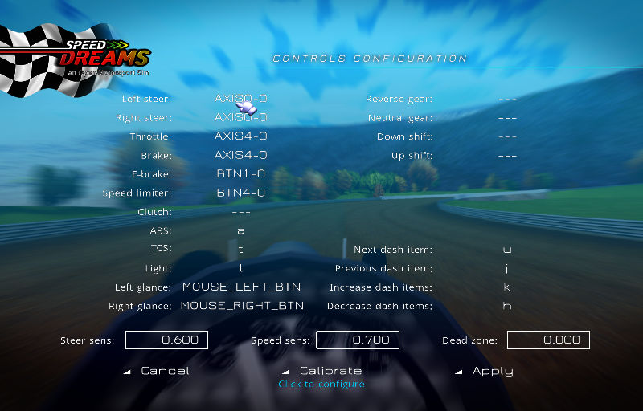
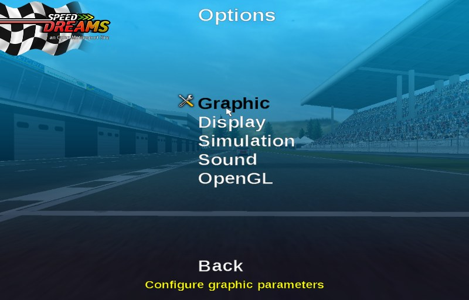
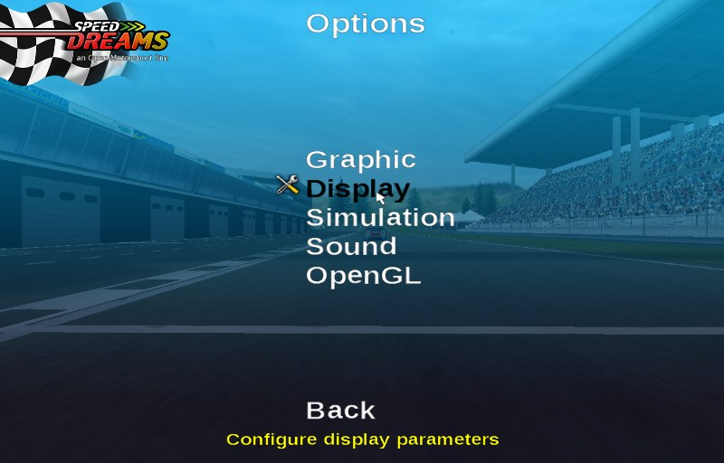

Here is the manual for the players who want to drive in Speed Dreams 1.4.0.
First of all you should install and run Speed Dreams ; for that, please read see the INSTALL file here.
After that you'll be able to drive a car with a joystick, a steering wheel, or simply with the mouse and/or keyboard.
You first need to configure a "human player" in order to choose you car and control device(s) : go to the Player Configuration menu.
To select a player to configure, click in the "Players" list box on one player's name. You can also :

Here, we have selected the player named "Player".
To change his name, click in the "name" field and edit it with usual keys.

Tip: If you do not want to come back later to change the car / control settings, create here multiple players with different cars / control settings ...
This configuration screen is also used to:
To configure the controls click on the "Controls" button

Now, click on the control you want to change ...

... and then press the keyboard key you want to use for that control, or a mouse button if you prefer, or even ... move the mouse if that control have to be assigned to a mouse move event.
Tip: To unassign a given control, click on it and press the Escape key.

You can also use a joystick, a gamepad, or even a wheel with/without pedals/gear lever ... See the Vojtech Pavlik's joystick driver site for more information on how you can have your device work under Linux. (see also Linux Gamers FAQ).
The control configuration screen is a bit different if you choosed the grid shifting mode, but it works the same way.

Tip: If your device was not plugged in (you forgot), just exit from the control configuration screen, plug it in, and then get back ... This time it should work.
Proceed with all the controls you want to configure (you can use device buttons, axes, ...).
Then you probably want to calibrate the relevant axes.

Just follow the calibration instructions on the screen.

The calibration screen is a bit different when you choosed the mouse.

When the calibration is done, press the "back" button. If something went wrong during the calibration process, don't panic, use the "reset" button to start over the calibration.
You'll have to save your control settings before exiting (unless you want to cancel all through the Cancel button).

And then save the players settings (or Cancel all of your changes through the Cancel button).

You can configure general options using the "Options" menu

The Graphic parameters are located in the "Graphic" menu

The following parameters are customisable:
As a general rule for all these parameters, greater values will need a more powerfull system : play a little to find the ones that fit best your hardware

The screen display configuration is done in the "Display" menu

You can adjust the screen / window resolution, the colour depth, the display mode (windowed or fullscreen), the video initialization mode ("compatible" normally works, while best may produce odd graphic effects ...).
Use the Apply button to validate your changes.
Note: If the program does not restart with the parameters you have chosen,
don't panic, just edit the "screen.xml" file and reset the values
to a more conservative choice (this file is normally located in ~/.speed-dreams/config under Unixes, or
Advanced: Under Windows, you can also set the maximum screen refresh rate (Hz) during the game : if your real hardware screen refresh rate is 75 Hz, it's useless (no harm, only warm and noise ;-) to use a higher value as your CPU will work for nothing. Under Linux, use your video driver configuration tool and set the "Sync to VBlank" option to get the same effect.

If you are experiencing problems with the mouse cursor, you can try to launch TORCS with the option "-m". And if you have texture problems, you can try the "-s" option to run in single texture mode.
Go to the racing menu:

Select one of the type of race:

Configure it:

Select the track:

Select the drivers:

Save the parameters:

Configure the race length:

Launch the race:


Press F2 to cycle through the driver views:


Press F1 to get the help about all the commands:
Press F1 to get the help about all the commands. Beware, most views, camera and the map keys are "modal", so if you hit them multiple times you will get different variations of the view/camera/map.